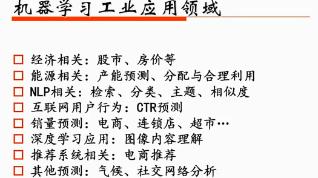
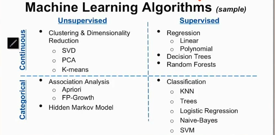
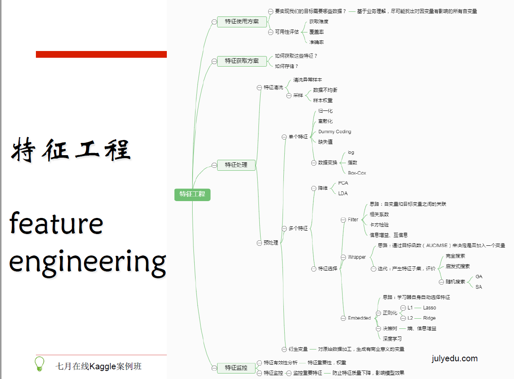

七月 Kaggle Notes
七月的Kaggle实战课程笔记
本节课主要介绍了各个算法的具体应用场景和sklearn的算法图的选择原理都是什么。这里有一篇作者自己写的 机器学习算法一览，应用建议与解决思路，这篇文章大概就是该课的前面四十分钟的内容。
一、建模与问题解决流程
- 了解场景和目标以及评估标准
- 数据处理（清洗、调权）
- 特征工程（数据的特征处理的权重是远远高于模型的高级程度）
- 模型选择
- 寻找最佳超参数：交叉验证
- 模型分析与模型融合（参加比赛不可能一个模型跑到底）
以上的内容主要可以分为如下的几个部分：
- 拿到数据之后怎么样了解数据（可视化）：并一定所有的数据都可以做可视化的，也不是所有的可视化都需要针对所有的数据来做
- 选择最贴切的机器学习算法（这就需要我们对各大算法有一定的熟悉程度）
- 定位模型状态（过/欠拟合）以及解决方法：如果出现了过/欠拟合的话肯定结果就不太合适了
- 大量极的数据的特征分析与可视化
- 各种损失函数（loss function）的优缺点及如何选择
二、工业应用领域

三、常用算法
在工业界有监督学习相对来说实用度更高一点。
- 基于参数的 Regression ，基于树的 Decision tress 和 Randon Forests 这些都是针对连续值的一个拟合。
- Classification：客户对于我推荐的广告感兴趣还是不感兴趣，这个东西是猫还是狗。分类的效果都是在有限个集合里的最后的一个预测值是否正确。主要有 KNN、Tress、Logistic Regression 、 Naive-Bayes、SVM（中小型数据的处理上表现挺好）
- Unsupervised：针对几千维度的数据对于服务器的压力是非常大的，所以我们可能需要去做一个降维处理就会用PCA或SVD，K-means的话

四、数据预处理
4.1 数据清洗
- 不可信的样本丢掉：如何去判断哪些数据是不可信的需要结合具体的场景去考虑
- 缺省值极多的字段考虑不用
4.2 数据采样
- 下/上采样
- 保证样本均衡
五、特征工程
